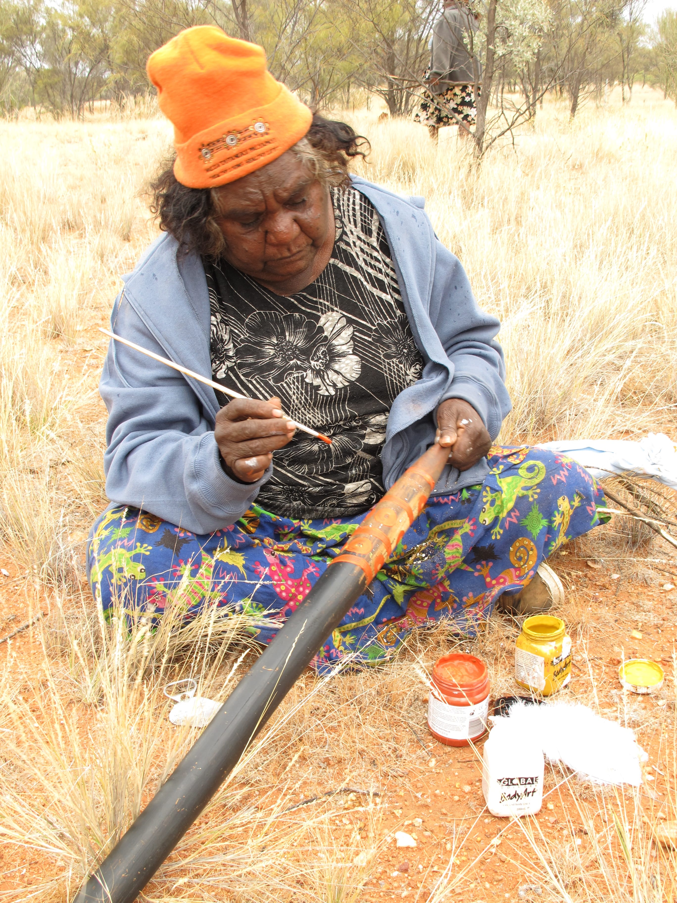

Bullocky Soak
When I was little, I was taken to Amakweng (Central Mount Stuart) soakage. I grew up there, army time. At Bullocky soak. Lots of people were living there and my family was watering the cattle. There were big althart ceremonies at Amakweng. We saw them as children. When I was older, I went to work at Anningie Station. We worked there and we were paid with rations. I've grown old here at Ti Tree. We tell the kids stories and teach them awely ceremonies, teach them to dance. We are teaching the children at school so they can hold onto this knowledge after we pass away.
[cant find audio for this]

Clarrie Kemarr Long teaching young girls to dance awely. Angenty waterhole, July 2011 (L – R) Clarrie Long, Camille Presley, Anika Campbell, Molly Napurrurla Presley, Shakayla Campbell, Lanisha Campbell.
Jennifer Green.

Clarrie Kemarr Long painting the ceremonial kweter with Mer Angenty design. Angenty waterhole, July 2011
Jennifer Green
Station work
When I was older, I worked at Willowra. I worked there then came back to that same place, Anningie. I worked for that old woman. Shepherding cows, and doing the washing and the ironing. For the whitefellas from the station. We were really healthy, never sick, getting up at daylight. Then I shifted to Ti Tree for good, and that is where I grew old.
We used to put all the calves in a yard. Then we'd put their mothers in a bigger yard. Then we'd send the calves off again with their mothers. In the evening, off to pasture. We washed the clothes by hand. We did a lot of hard work. We didn’t get paid – we just worked for rations. No money – just tobacco. And we used to get sugar and flour. There wasn’t any money at that time. Clothes and blankets were free. All of the people in the camp got rations, killers. People used to shoot kangaroos and emus. We used to get pie melons and all. The old women cooked them in the ground. When they were cooked, they pulled them out of the hot earth and put them in dishes. They were really delicious, and we ate them when they were cooked. They tasted a bit like bush bananas.
ClarrieKemarr100417-01
Coniston Massacre
One old man, my arreng-arreng (father’s father), used to tell me. He was an old man, a Kemarr. He told us about how they fled in fear from the whitefellers. It all started at a place called Rrkwer (Brooks Soak). Supposedly one whitefeller was killed by whatshisname [Penangk]. After the murder the old man hid in a cave and blocked the entrance up with grass, and the whitefellers could not find that old man. There was a little dog there in the cave. He was shut up inside the cave with the grass covering the entrance. And the dog inside the cave didn’t bark at all. The whitefellers went back again. They couldn’t find him. That was at the place called Rrkwer. He was Penangk, old man. Supposedly he sent his wife to ask for tobacco. Then he got an axe and killed that whitefeller, jealous way, because of his wife.
After that the lots of whitefellers, soldiers they got from somewhere, came on camels, and they travelled around and killing Aboriginal people as they went. And that old man Penangk was safe in the cave. The whitefellers looked for him in vain. They massacred people around the Willowra area, right up to Thimpelengkw. They went as far as there, killing the poor people. Some people fled in fear and others passed away. They shot Warlpiri and Anmatyerr people. It started at Coniston. They went around shooting people like dogs, the poor things. They went right up to Thimpelengkw shooting people. From Rrkwer.
ClarrieKemarr100417-03